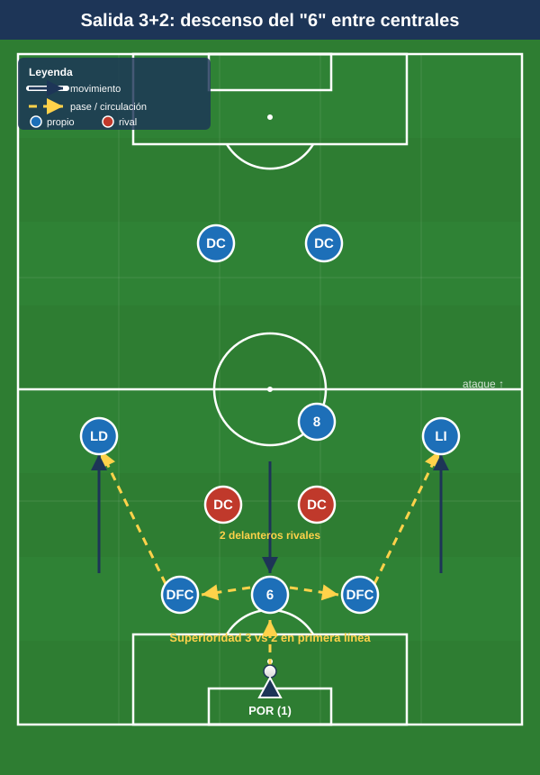
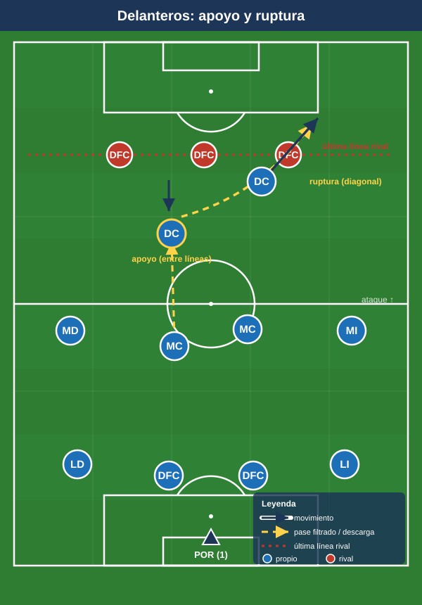
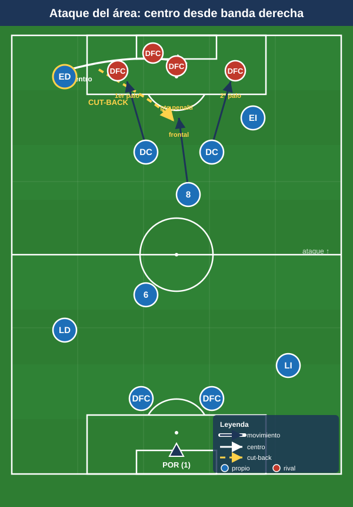
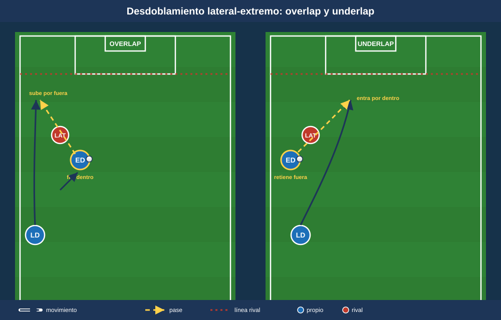

Módulo 03 — Fase ofensiva
Salida de balón, construcción en zona media, último tercio y automatismos del 1-4-4-2. Convención de posiciones y distancias en el README.
1. Salida de balón desde atrás
1.1 Estructura base
El 1-4-4-2 sale habitualmente en +1 sobre la primera presión apoyándose en el portero. La estructura más estable es la salida en 4 + 1: dos centrales abiertos a la anchura del área, dos laterales subidos a la altura del primer pivote, POR como hombre libre. Frente a un rival con dos puntas (caso simétrico 4-4-2 vs 4-4-2), los centrales quedan en 2 vs 2 si no se genera superioridad. Tres soluciones canónicas:
- Descenso de un pivote (salida "3+2"): el MC más posicional (el 6) baja entre o al costado de los centrales, creando un 3 vs 2 y liberando al otro MC entre líneas. Patrones: drop entre centrales (rombo con POR, útil contra marcaje hombre a hombre), drop al costado de un central ("La Volpiana" lateralizada, para salir por fuera) y drop falso (amago que arrastra a un MC rival y abre la línea interior).
- Portero como jugador de campo: con POR hábil con pie, no baja ningún MC; el POR juega de tercer central virtual y los dos pivotes permanecen altos. Adelanta la estructura, pero exige POR solvente bajo presión.
- Laterales como primera salida (por fuera): centrales abiertos y altos atraen a las puntas; el balón se libera al lateral, que recibe orientado con el extremo dándole profundidad o cayendo a apoyar.

1.2 Superar la primera línea de presión
- Orientar al rival y jugar al lado contrario (cambio de orientación de central a central).
- Pase entre líneas a un MC que recibe de cara (recepción orientada) o a un DC que baja a apoyar de espaldas para descargar a tercer hombre.
- Provocar y saltar la presión: conducción del central para fijar al delantero rival y, en el momento del salto, soltar al hombre libre que ese delantero abandona.
- Salida en largo dirigida: ante presión asfixiante, balón directo a la zona de uno de los dos puntas para disputar y atacar el segundo balón con el MC y el extremo de ese lado. La presencia de dos delanteros hace este recurso más rentable que con un solo 9.
1.3 Por dentro vs. por fuera
- Por dentro: preferida si el rival presiona con extremos cerrados o defiende en bloque medio; se busca el pivote libre y la recepción entre líneas.
- Por fuera: preferida contra presión orientada al centro; lateral + extremo + delantero del lado forman un triángulo de salida que progresa por banda.
2. Construcción en zona media
2.1 Roles de los dos MC
El reparto óptimo es asimétrico y complementario:
- Pivote posicional (el "6"): ancla, línea de pase de seguridad por detrás del balón, equilibrio ante pérdidas, el que baja en la salida. Recibe de espaldas y descarga a un toque.
- Pivote llegador (el "8" / box-to-box): ataca el espacio entre líneas, llega a zona de remate, da el pase de ruptura. Es el enlace con los dos delanteros.
Cuando uno avanza, el otro cubre (principio de balancín/relevos): nunca suben los dos a la vez. La debilidad en construcción es el espacio interior entre líneas, por lo que basculación y comunicación de marcas son críticas.
2.2 Recepción entre líneas y circulación
- Caída de un delantero a recibir entre líneas: como no hay mediapunta nominal, la recepción entre líneas la genera un DC que baja (perfil enlace/falso 9 puntual) o el pivote llegador. Crea momentáneamente un 4-4-1-1.
- Tercer hombre: central → pivote que descarga de espaldas → pase liberado a delantero/extremo girado. Mecanismo nuclear para progresar limpio.
- Cambio de orientación: ante bloque medio compacto, mover de banda a banda buscando el lado débil; el extremo lejano se queda alto y abierto.
- Apoyos en triángulo permanentes: cada poseedor con mínimo dos líneas de pase. Lateral-extremo-pivote forman el triángulo de banda; central-pivote-delantero el triángulo interior.
3. Último tercio
3.1 Amplitud de los extremos
La gran fortaleza ofensiva es la doble amplitud de los extremos pegados a banda:
- Dar anchura máxima para estirar la última línea rival y abrir corredores interiores.
- Encarar 1v1 contra el lateral en aislamiento (situación buscada tras cambio de orientación).
- Dos perfiles: extremo clásico (desborda por fuera y centra) y extremo a pierna cambiada (se mete a recibir entre líneas y libera la banda para el desdoblamiento del lateral).
3.2 Desmarques de los dos delanteros
La ventaja distintiva del sistema es la pareja con movimientos coordinados y opuestos:
- Apoyo + ruptura (movimientos opuestos): cuando uno baja a recibir, el otro ataca el espacio a la espalda. Es el automatismo madre de la dupla: nunca caen los dos al mismo tiempo. El que baja descarga al primer toque para el que rompe, o fija a un central y abre el carril.
- Juego de espaldas y descarga: el DC referencia recibe de espaldas, protege y descarga a la llegada del MC, el extremo o el segundo punta.
- Desmarques cruzados: los dos DC cruzan trayectorias para desorganizar a los centrales (uno arrastra fuera, el otro ataca el hueco central).
- Ataque a los medios espacios: desmarque diagonal de ruptura al corredor que deja el lateral rival al subir.
- Coordinación con la línea rival: el que rompe temporiza para no caer en fuera de juego (salir desde detrás del defensor, atacar el espacio en el momento del pase).

3.3 Llegada desde segunda línea
- Pivote llegador (el "8") entra al área por el carril central o al segundo palo: goleador "fantasma" difícil de marcar.
- Lateral que se incorpora sumando hombre en banda o llegando al segundo palo en el centro del lado contrario.
- Regla de equilibrio: por cada llegada de segunda línea, un MC y los centrales sostienen el resto defensivo para la transición.
3.4 Centros laterales y remate — la ventaja de los dos puntas
El sistema está diseñado para poblar el área. Reparto canónico de zonas de remate en un centro desde banda derecha:
- Primer palo: un DC (ataque al primer palo, desvío/prolongación).
- Punto de penalti / zona central: el segundo DC (remate principal).
- Segundo palo: el extremo del lado contrario o el pivote llegador (rechaces y centros pasados).
- Frontal / borde del área: el otro MC para el rechace y el primer equilibrio defensivo.
Esto da 3–4 atacantes en zona de remate sin descomponer el equipo. Tipos de centro a entrenar: raso al primer palo, tenso a la zona de penalti y centro atrás (cut-back) desde línea de fondo a la frontal (la zona más rentable). El cut-back combina especialmente bien con el extremo que llega a fondo y el DC/MC que ataca la frontal.

4. Mecanismos y automatismos
- Pared (one-two): el DC que baja de espaldas devuelve de primeras al MC/extremo que ataca el espacio. Supera líneas en zona media y entra al área.
- Tercer hombre: el primer receptor (de espaldas) no progresa; lo hace el tercero que recibe de cara. Aplicable en salida, construcción y entrada al área.
- Cambio de orientación: circular fijando un lado y soltar al extremo aislado del lado contrario. Rentabiliza la doble amplitud. Variantes: cambio aéreo largo central→extremo lejano; cambio escalonado por dentro.
- Desdoblamiento lateral-extremo (automatismo de banda más característico): si el extremo abre y fija al lateral rival, el lateral propio se incorpora por dentro o ataca la espalda; si el extremo se mete a pierna cambiada, el lateral sube por fuera (overlap); underlap = el lateral entra por el carril interior mientras el extremo retiene por fuera.
- Combinaciones de banda en triángulo: lateral-extremo-delantero generan pared + tercer hombre para llegar a fondo y centrar.
- Rotación de los puntas con el pivote llegador: cuando un DC cae a recibir, el "8" ataca el espacio que ese DC libera.

Ideas clave
- La salida genera +1 con descenso de un MC o con el POR como jugador; ante presión asfixiante, balón directo a los dos puntas y ataque del segundo balón.
- Los dos MC son complementarios (uno ancla, uno llegador) y se relevan: nunca suben los dos a la vez.
- Se progresa con tercer hombre y recepción entre líneas del delantero que baja.
- El último tercio explota la doble amplitud, los cambios de orientación y los movimientos opuestos de los delanteros (apoyo/ruptura).
- En los centros se puebla el área con 3–4 rematadores y se prioriza el cut-back.
Errores comunes
- Centrales juntos en la salida (deben abrirse a la anchura del área).
- Pivote que recibe de espaldas plano en vez de en perfil orientado.
- Que bajen los dos delanteros o rompan los dos a la vez: rompe el automatismo apoyo/ruptura.
- Abusar del pase lateral cómodo en vez del primer pase que rompe una línea.
- Subir los dos MC simultáneamente, dejando sin resto defensivo la transición.
- Centros en globo cómodos al área en lugar de centro tenso / cut-back, y atacar el área sin ocupar los tres puntos (primer palo, penalti, frontal).